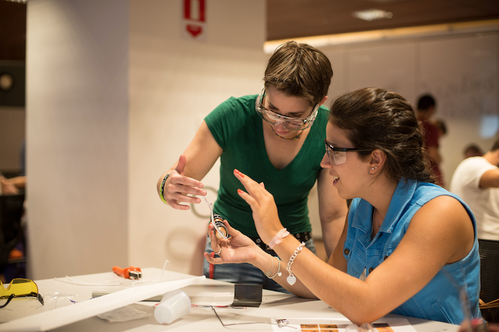

I spent the fall semester of 2014 at Insper University as an Education Design Consultant. There, I worked with faculty to help develop an engineering program that would be piloted the following semester. We explored how we could create a learning style and culture similar to that of Olin College, but in the context of Insper University. A challenge was working with restrictions from the Brazilian Ministry of Education, balancing existing and potential student life, and cultural differences.
An Olin student working with an Insper Engineering student.
KEY TAKEAWAYS: Designers have to be flexible when trying to implement a model into a different context. The cultural and environmental changes should be seen as opportunities to improve the existing model.